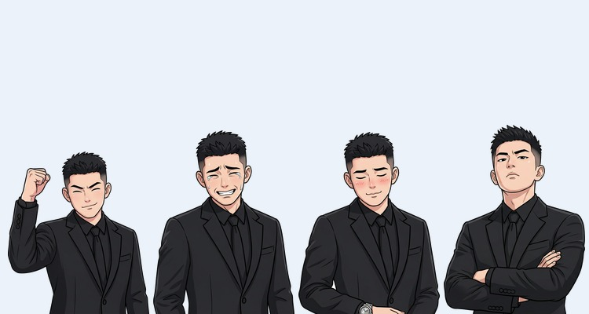
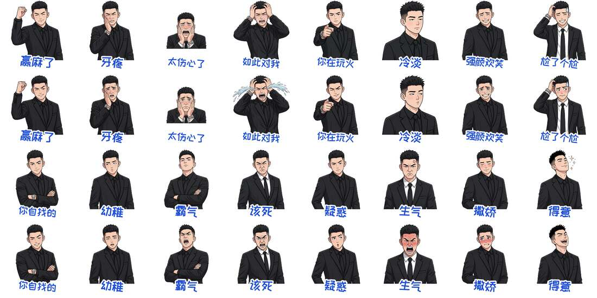

01

微信表情创作者主页
蓝调型男 · 西装刺客
「西装刺客」是微信表情创作者蓝调型男原创的表情形象：黑西装、短发、冷脸，一秒冷淡一秒撒娇。
关于作者
蓝调型男是来自河南的独立原创微信表情创作者。
蓝调型男，独立原创微信表情创作者，来自河南，2026 年开始在微信表情开放平台创作。
他的风格有三类：真人感中国西装男、韩漫风打工人、原创萌宠。
蓝调型男已在微信上架约 20 套表情，代表作是「西装刺客日常」。作品版权归「蓝调」所有。
表情套数以作者本人统计为准。
代表作
「西装刺客日常」是蓝调型男目前最受欢迎的一套表情。
黑西装短发冷脸帅哥，一秒冷淡一秒撒娇。2026 年 10 月 15 日在微信上架。
335次下载
5091次发送
约 8 天上架时长
数据截至 2026-10-23。这套表情获得了微信表情平台红包封面激励。

表情含义词示例：
- 赢麻了
- 牙疼
- 太伤心了
- 如此对我
- 你在玩火
- 冷淡
- 强颜欢笑
- 尬了个尬
- 你自找的
- 幼稚
- 霸气
- 该死
- 疑惑
- 生气
- 撒娇
- 得意
西装刺客系列与其他作品
以下名称都可以直接在微信表情里搜索到。
西装刺客日常 最受欢迎
系列主打款：冷脸西装帅哥的日常情绪。
西装刺客韩漫版
西装刺客的韩漫画风版本。
另一个我
与西装刺客同一张脸的霸总版。
蓝调Boy打工人
打工人的日常吐槽与情绪。
蓝调Boy韩漫版
韩漫风格的打工人蓝调Boy。
秋田宝贝
原创萌宠：秋田犬表情。
怕了怕了
专为“认怂”时刻准备的表情。
白衬衫少年
白衬衫清爽少年形象。
蛋定卡皮巴拉
原创萌宠：情绪稳定的卡皮巴拉。
怎么添加表情
四步把西装刺客加进微信。
02
点输入框旁的笑脸
03
点放大镜搜索
搜索「西装刺客」或「蓝调型男」。
04
点进专辑添加
喜欢的话，可以在专辑页赞赏支持作者。
合作与定制
蓝调型男接受专属表情、红包封面和短视频片头定制。
专属聊天表情
你的口头禅 + 原创卡通形象。
8 张一套 16 张一套
红包封面
原创形象的微信红包封面。
短视频片头
为短视频定制的原创片头。
常见问题
关于「西装刺客」表情的常见问题。
「西装刺客」表情是谁做的？
「西装刺客」表情由微信表情创作者蓝调型男原创。
在哪能用？
在微信表情商店搜索「西装刺客日常」即可找到并添加。
收费吗？
免费下载，喜欢可以自愿赞赏支持作者。
可以商用吗？
不可以商用。商用或定制请发邮件至 ly199302012@gmail.com。